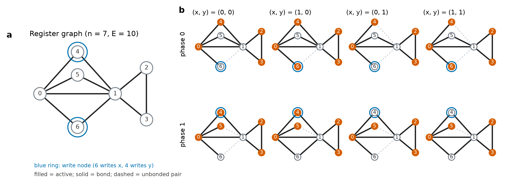

Halil Talha Ertan
Independent Researcher, Istanbul
About
I am interested in memory: how it can arise on its own in simple dynamical systems, and how it can be stored and searched cheaply in practical ones. One line of work studies network automata whose connections are shaped by the dynamics: particles form and break bonds, a Boolean rule runs on the resulting graph, and the question is what such systems can store. Another line measures compact memory retrieval for conversational agents against standard baselines such as BM25. I prefer exact or exhaustively checked results, negative results reported as such, and fully reproducible code.
Papers
Memory without mechanics: exact analysis of a particle-network automaton with rule-driven bonds
In a model where particles bond by distance and a Boolean rule gates the bonds, the mechanics become exactly inert at rest. An exhaustive search over all connected candidate graphs up to seven nodes finds exactly one that carries a clocked two-bit register. Its states occupy identical positions and differ only in which bonds exist. The mechanical layer adds nothing beyond triangle-rich graphs, and a flat bond-energy landscape explains why the register is fragile.

Twelve Bytes Against an Inverted Index: What a Compact-Code Memory Retrieval Programme Found, and Which Configuration Choices Decided It
Can a 12-byte code per document replace or complement a BM25 index when an agent searches its conversational memory? Across four benchmarks it does not beat BM25 on any measured axis. Five configuration choices (document unit, query cohort, projection family, benchmark and metric) each reversed a verdict with everything else fixed. Two lossless compactions leave every output bit unchanged while cutting the encoder vocabulary by about 63% and the BM25 index by about 76%.